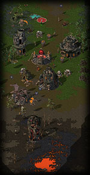

|
Strifeshadow is a Multiplayer Real-Time Strategy(RTS) computer game set in a fantasy world.
It runs on the Windows 98, ME, 2000 and XP platforms
While remaining true to the RTS genre, Strifeshadow sets itself apart from other RTS games in three key ways: Strategic depth in gameplay, an emphasis on involved battles and tactical control, and a variety of community-oriented features.
Strategic depth in gameplay is a somewhat elusive concept, but it is what primarily separates a good RTS from a great RTS. A game that is strategically deep always leaves the player with valid choices to make at any given moment. Strifeshadow has a number of features in place to make this possible, and keep the player busy making significant decisions and formulating strategies.
|  |
We at Ethermoon understand that players today do far more than simply 'play the game', so Strifeshadow features several diversions to keep idle minds busy. Strifeshadow comes packaged with game recording and a utility to annotate games. This will allow players to look at "the pros" strategies, reflect back on their games, and even write tutorials. Strifeshadow is also being shipped with a complete toolset to allow for fan-created expansions to the game. In addition, there are a number of tournament and league features present in order to foster competitive gaming, which is a major part of any gaming community.
Strifeshadow requires a Pentium 2 300Mhz processor (or equivilent) or faster and 64MB of RAM. A modern AGP 3D card (e.g. TNT, Geforce, Vodoo3+, ATI Rage/Radeon, etc) is highly recommended, but not required. Strifeshadow also requires Microsoft DirectX 8.0, which is included on the Strifeshadow CD.
| Not one for words? Check out the Animated Gameplay Images Gallery to see how some of Strifeshadow's cooler features work in the game.. |
Strifeshadow, Ethermoon Entertainment and their respective logos are trademarks of Martin Snyder